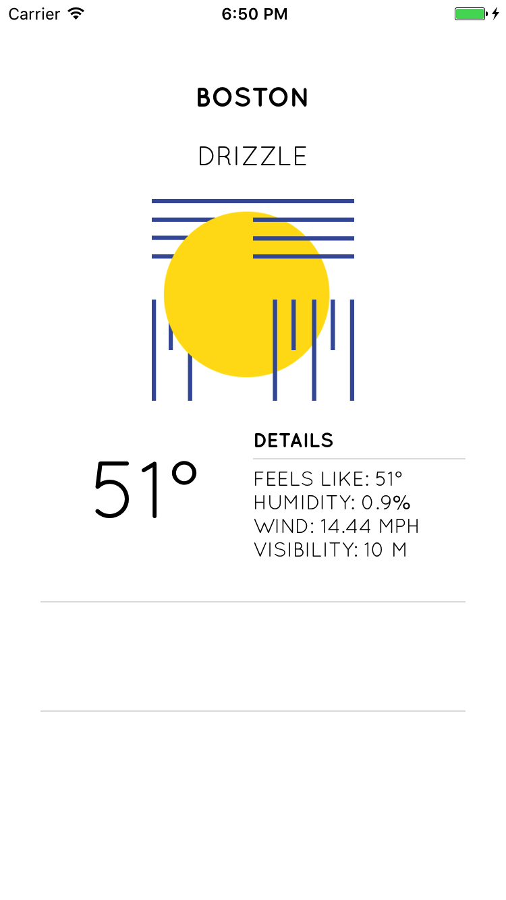
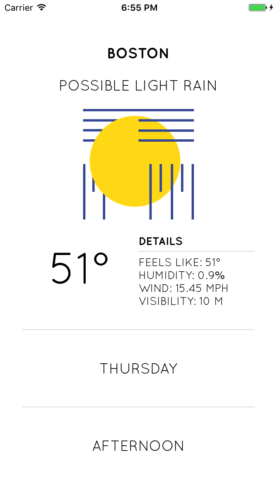

<!--
Copyright (c) 2016 Google Inc.

Licensed under the Apache License, Version 2.0 (the "License"); you may not
use this file except in compliance with the License. You may obtain a copy of
the License at

    http://www.apache.org/licenses/LICENSE-2.0

Unless required by applicable law or agreed to in writing, software
distributed under the License is distributed on an "AS IS" BASIS, WITHOUT
WARRANTIES OR CONDITIONS OF ANY KIND, either express or implied. See the
License for the specific language governing permissions and limitations under
the License.
-->
<link rel="import" href="../../step-style.html">
<link rel="import" href="../../syntax-style.html">
<dom-module id="step-6">
   <style include="step-style"></style>
   <style include="syntax-style"></style>

  <template>
    <p>The last thing we need to do is to display an image according to the current forecast. Forecast.io sends back an icon name
      with a forecast, so we can use that to build a nice UI.
    </p>

    <p>Replace the setImage(icon) method with the following:</p>

    <pre>
        setImage(icon) {
          console.log(icon);
          switch(icon) {
              case "partly-cloudy-day":
                this.image = "~/images/cloudy.png";
                break;
              case "partly-cloudy-night":
                this.image = "~/images/cloudy.png";       
                break;
              case "clear-day":
                this.image = "~/images/sunny.png";        
                break;
              case "sleet":
                this.image = "~/images/foggy.png";        
                break;
              case "snow":
                this.image = "~/images/foggy.png";        
                break;
              case "wind":
                this.image = "~/images/foggy.png";        
                break;
              case "rain":
                this.image = "~/images/rainy.png";        
                break;
              case "lightning":
                this.image = "~/images/rainy.png";        
                break;
              case "cloudy":
                this.image = "~/images/cloudy.png";        
                break;
              case "fog":
                this.image = "~/images/foggy.png";        
                break;
              case "clear-night":
                this.image = "~/images/sunny.png";        
                break;
          }
      },
    </pre>
    
    

    <p>It's looking better! Now we just need to do a little date/time string manipulation 
      to complete the UI.
    </p>

    <p>In the created() method, under getMyWeather(), add the following:</p>

    <pre>
        //date manipulations
        var currentDate = new Date()
        var day = currentDate.getDay()
        var weekdays = new Array(7);
        weekdays[0] = "Sunday";
        weekdays[1] = "Monday";
        weekdays[2] = "Tuesday";
        weekdays[3] = "Wednesday";
        weekdays[4] = "Thursday";
        weekdays[5] = "Friday";
        weekdays[6] = "Saturday";
        var dayName = weekdays[day];
        var currentHours = currentDate.getHours()
        console.log(currentHours)
        var timeOfDay = (currentHours >= 12 ) ? "Afternoon" : "Morning"
        console.log(timeOfDay)
        this.day = dayName
        this.time = timeOfDay 
    </pre>

    <p>This block simply gives the time of day, to match the clean UI from Behance.</p>

    
    
    <p>This weather app now looks great! Next steps would include adding a side drawer and the ability to switch 
      between locations. I hope you enjoyed this NativeScript-Vue Snacklab. If you are interested in learning more
      about this integration, please visit the #vue channel on NativeScript Community Slack, and read more about it on 
      our <a href="https://www.nativescript.org/search?start=0&q=vue">blog</a>.
    </p>

    <p>The full code can be found <a href="https://github.com/jlooper/cleanweather">here</a>.</p>
  

  </template>
  <script>
    Polymer({
      is: "step-6"});
  </script>
</dom-module>
